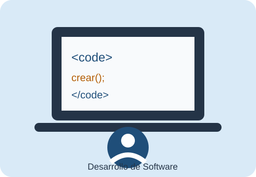

Desarrollador de Software
Mi trabajo de sueños es ser Desarrollador de Software. Me gustaría participar en la creación de aplicaciones y sistemas que ayuden a resolver problemas reales. También me interesa seguir aprendiendo nuevas tecnologías y mejorar mis conocimientos para poder desarrollar soluciones útiles y fáciles de utilizar.

| Paso | Requisito o actividad | Objetivo |
|---|---|---|
| 1 | Aprender fundamentos de programación | Comprender la lógica y las bases del desarrollo. |
| 2 | Practicar HTML, CSS y JavaScript | Crear páginas y aplicaciones básicas. |
| 3 | Realizar proyectos personales | Aplicar lo aprendido y crear experiencia. |
| 4 | Continuar con una formación profesional | Fortalecer conocimientos y habilidades. |
| 5 | Buscar oportunidades laborales | Aplicar los conocimientos en un entorno real. |
Mi objetivo es prepararme poco a poco para desempeñarme como desarrollador de software. Considero que la práctica y la constancia son importantes para avanzar, por lo que quiero seguir realizando proyectos y aprendiendo de los errores que encuentre durante el proceso.